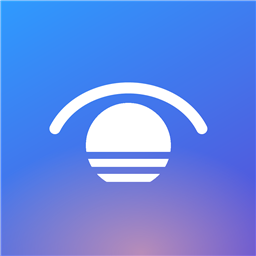

Instagram, só de amigos
Feed e Stories de quem você segue, sem anúncios nem sugestões, e com fim: “Você está em dia”. O Reel que um amigo manda na conversa abre; o próximo, não.

Instagram, TikTok e YouTube só com o que importa: amigos, mensagens e os vídeos que você escolhe. Sem Reels, sem Shorts, sem feed infinito.
Em breve na App StorePara iPhone · 14 dias grátis, sem cartão
Como funciona
Feed e Stories de quem você segue, sem anúncios nem sugestões, e com fim: “Você está em dia”. O Reel que um amigo manda na conversa abre; o próximo, não.
Abre direto nas mensagens. Você assiste ao vídeo que recebeu e pronto: sem a página “Para você”, sem busca, sem rolar sem parar.
Vídeos longos e as suas inscrições continuam. A prateleira e a aba de Shorts somem.
O Wake soma o tempo nas três redes e avisa quando a meta chega. Ele não bloqueia: sair é decisão sua.
Para mudar os filtros, o Wake pede uma pausa e uma frase. Tempo suficiente para o impulso passar.
Abra direto nas mensagens do Instagram ou nas suas inscrições do YouTube, com um toque na Tela de Início ou pela Siri.
Sem cadastro, sem servidor, sem anúncios, sem rastreamento. Você entra nas páginas oficiais de cada rede; o Wake não lê nem guarda senhas.
Preço
Use tudo por 14 dias, sem cartão. Depois, escolha um plano.
Assinatura pela App Store, com renovação automática. Cancele quando quiser nos Ajustes do iPhone.
Não. Ele abre as versões oficiais para navegador de cada rede, dentro do app, e tira só as partes feitas para prender sua atenção. Você continua usando as suas contas.
Não. O login acontece nas páginas oficiais de cada rede, e nada sai do seu iPhone para o Wake. Veja a política de privacidade.
Reels, Shorts e o feed infinito ficam sempre bloqueados: é para isso que o Wake existe. Ajustes como som dos vídeos e Stories podem ser mudados em Ajustes › Avançado.
Nos Ajustes do iPhone › seu nome › Assinaturas › Wake.